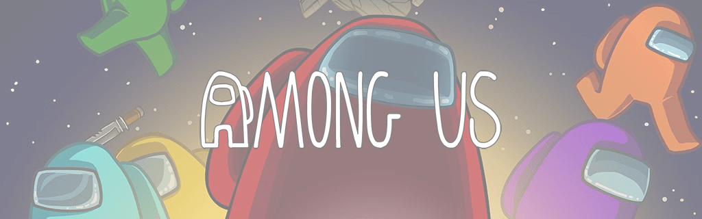

Memes
During it's popularity, Among Us created a new section of the internet. It's full of bad jokes and references to the game, usually referred to as an "Among Us Meme".
Slang
 Among Us heavily popularized the use of the words "sus" and "sussy", which are shortened versions of the words suspicious/suspect.
These words were originally used in Among Us game chats, referring to a player who someone thought was the Impostor.
However, this language quickly spread out of the game and into everyday life. People were referring to everything as "sus", making it
a big part of gen Z language.
Among Us heavily popularized the use of the words "sus" and "sussy", which are shortened versions of the words suspicious/suspect.
These words were originally used in Among Us game chats, referring to a player who someone thought was the Impostor.
However, this language quickly spread out of the game and into everyday life. People were referring to everything as "sus", making it
a big part of gen Z language.
The game also popularized phrases like "when the impostor is sus", "you vented", "red is sus", etc.
Memes
The game also created this "internet trend" where people will post photos of things slightly resembling the Crewmate.
This is usually quick scribbles and doodles, although there were some people who wanted to be a bit more creative.
Many think these memes are a plague to our generation, poisioning the minds of children.
For some reason, the Red colour is thought of as the "most sus". This could be since red is generally accosiated with Among Us's branding,
where the Red Crewmate/Impostor is seen as a mascot. Even if some people think this meme is overused,
it does not stop others from meming the game as much as they can.
Below is a gallery of these memes, including a snowman I built in March 2023 and the $100k Among Us Chicken Nugget: